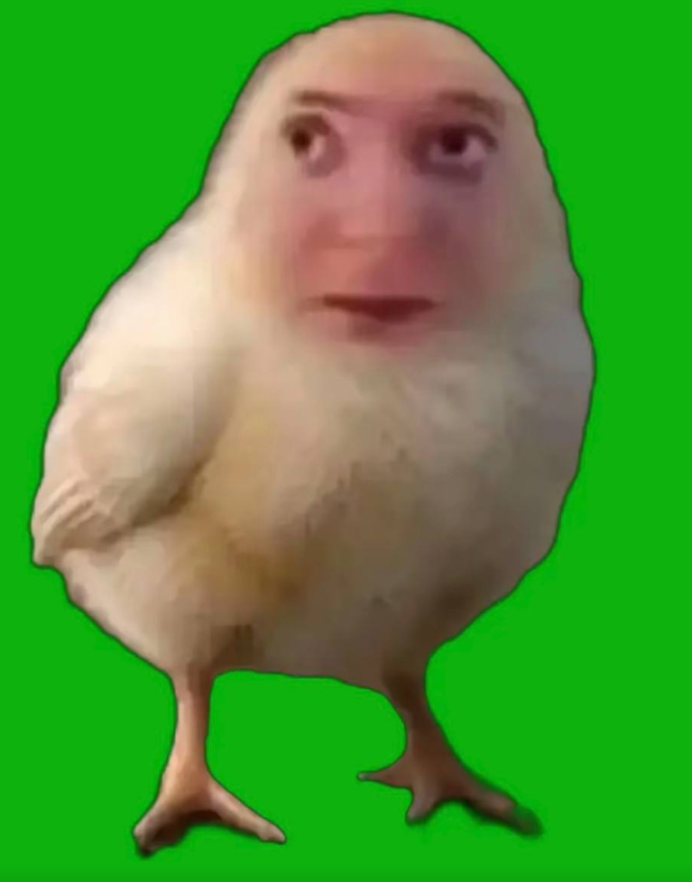

БЕГИ. СОБИРАЙ. НЕ ПОПАДАЙСЯ.
Интерпол уже на хвосте.
ЛИЧНЫЙ РЕКОРД00000
00000
01 / 15

0ЗДОРОВЬЕ100 / 100
RADIANT · ЛЕС КРУГ 1
ДВИЖЕНИЕ
01 — ВЫЖИВАЙ ДОЛЬШЕ02 — СОБИРАЙ ПТЕНЧИКОВ03 — НЕ ДАЙ СЕБЯ ОКРУЖИТЬ
Фанатская аркада. 3D-карта по мотивам Dota: три линии, река, леса и две базы. Сатирическая вымышленная погоня.